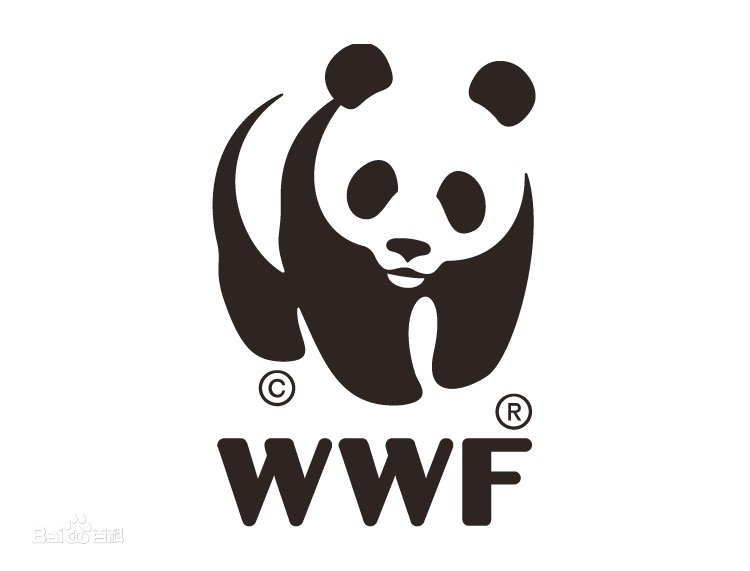

WWF(World Wide Fund for Nature or World Wildlife Fund)is one of the world's most prestigious independent non-governmental environmental protection organizations.WWF has been committed to environmental protection since its establishment in 1961, with more than 5 million supporters and a network of projects involving more than 100 countries around the world.
WWF is committed to protecting the world's biodiversity and living environment, all efforts are aimed at reducing human impact on these organisms and their living environment.
